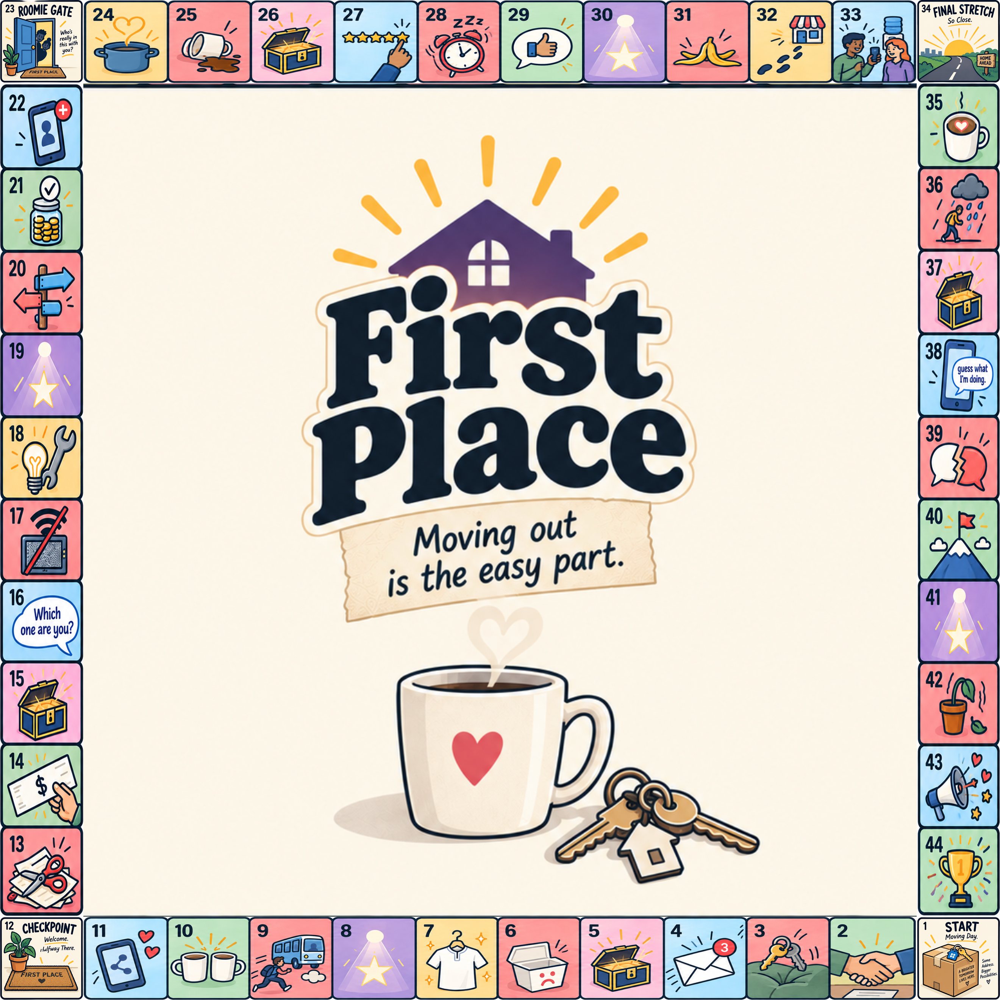
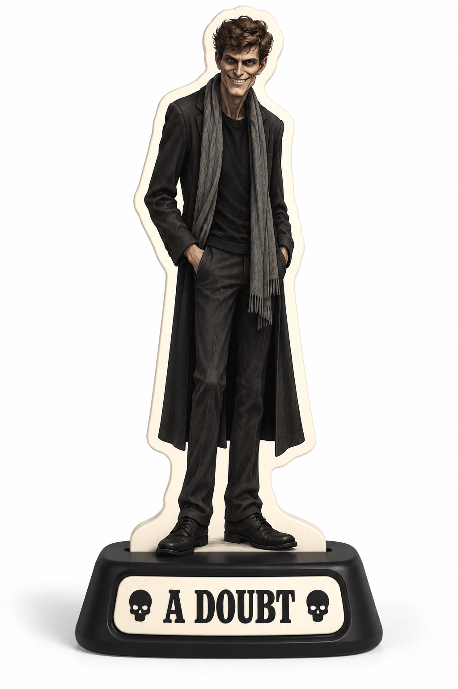

Choose Your Character
Pick who you're playing as — you'll follow their path to the dream.

Almost there
Enter your email to unlock the board.
The Board
44 squares from Moving Day to the Dream, Realized.
CLICK ME

Roomie Wall — collect them all